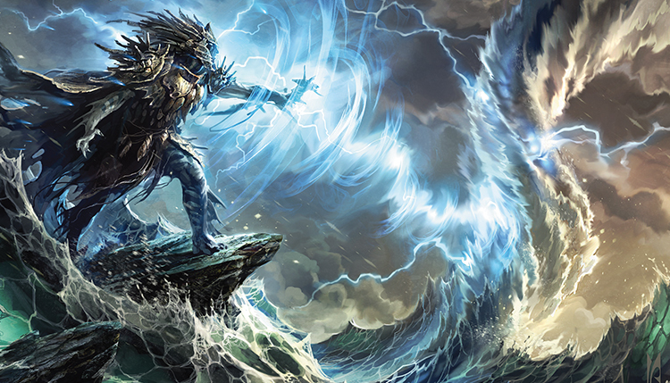
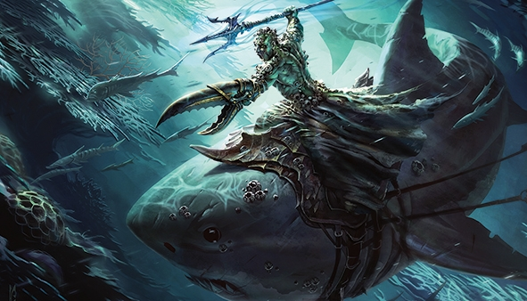
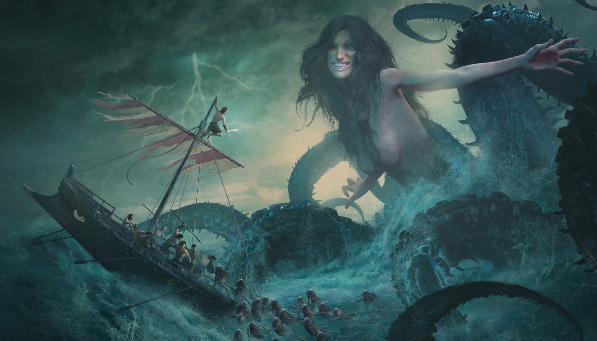
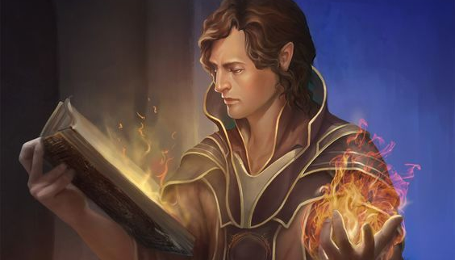
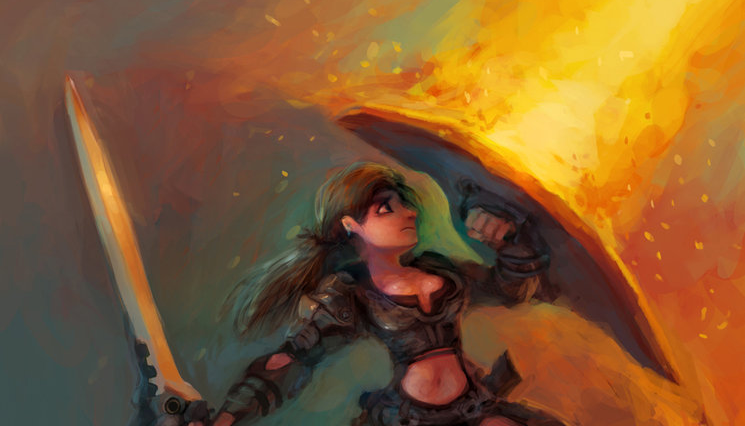
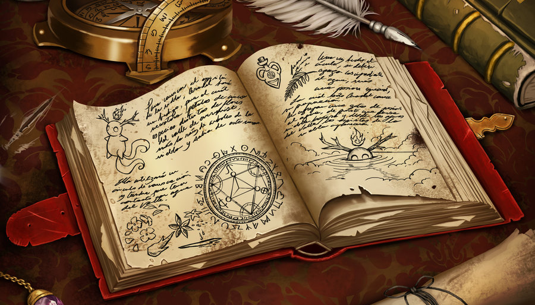
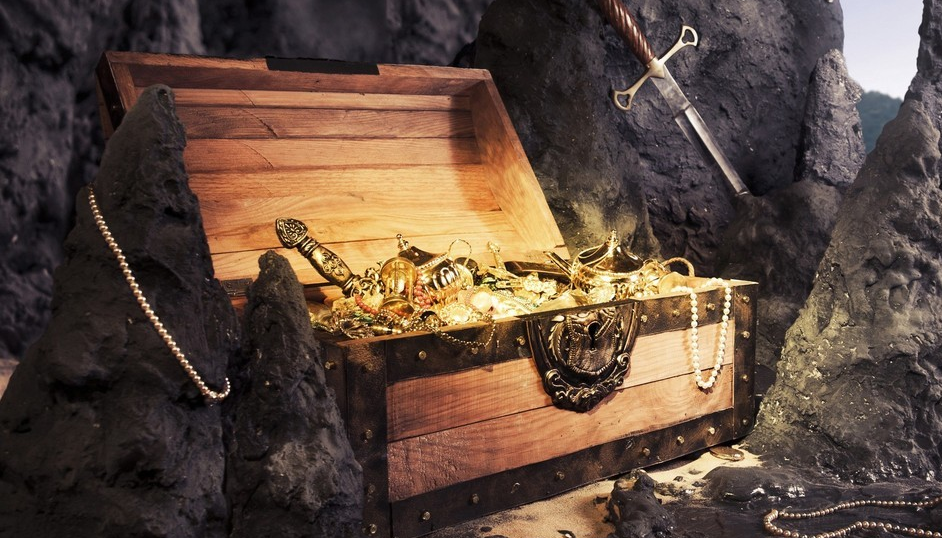

Hydran
(Hydran)

Âge
:
32ans
Taille
:
1m75
Poids
:
73kg
Yeux
:
blans
Peau
:
bleue
Cheveux
:
turquoises

Classe : Clerc de la Tempête
Niveau : 10 xp :
Race : Génasi d'eau
Alignement : Chaotique neutre
Histoire personnelle : Pirate
Niveau : 10 xp :
Race : Génasi d'eau
Alignement : Chaotique neutre
Histoire personnelle : Pirate
Des confins boisés de Cormyr à l'imposant mur de Sharksbane, la Mer des Étoiles Déchues n'avait plus de secrets pour Hydran. Dès l'age de 14 ans,
le jeune Génasi originaire de Veltalar avait rejoint l'équipage de Clyde Caldwell.
Cet incorruptible capitaine agissait envers lui comme un père.
Hydran n'avait jamais connu ses parents,
les prêtres de la Maison des Quatre Lunes avaient découvert son corps sans vie dans le port de Veltalar.
La rumeur disait qu'il était le fruit de l'union d'une jeune fille de pêcheur et d'un aboleth de l'île de Xxiphu.
Ce n'est qu'après une nuit entière de prières adressées à la déesse Selûne que le nourrisson reprit vie.
Hydran se consacra corps et âme au culte de sa bienfaitrice.
Implorant la clémence des flots depuis la proue du navire,
le jeune clerc sillonnait la Grande Mer auprès de son mentor.
Une nuit où ils prenaient le cap de Brassune,
ils furent pris en chasse par Galdaar,
un pirate orc sanguinaire.
Clyde barra vers l'Est mais Galdaar se rapprochait toujours.
L'abordage eut lieu dans la crique de Cimbar.
Le combat fût extrêmement violent.
Son équipage fût décimé en quelques minutes.
Avant d'être battu à mort et jeté par dessus bord,
Hydran eut le temps de voir son père adoptif se faire égorger par Galdaar.
Son corps dériva plusieurs jours avant d'échouer dans les ruines des Halls de Celle Née des Eaux,
un ancien temple dédié à Umberlie.
Son esprit quittait son enveloppe charnelle quand une voix résonna à ses oreilles,
une voix sombre et puissante,
pareille au vrombissement de l'eau :
celle de la déesse.
Celle-ci lui proposa un pacte,
lui redonner vie contre son allégeance éternelle,
qu'il renie sa protectrice,
sa rivale de toujours,
Selûne.
Le tonnerre se mis à résonner,
les vagues se déchaînèrent,
soulevant dans les airs le corps de Hydran.
Lorsqu'il retomba,
il était de retour,
prêtre de la tempête,
fidèle d'Umberlie,
prêt à affronter son destin :
se venger de Galdaar.
Génasi d'eau
(Water genasi)

Sagesse
:
+1
Constitution
:
+2
Résistance à l’acide : Vous avez la résistance aux dégâts d’acide.
Amphibien : Vous pouvez respirer aussi bien dans l'air que sous l'eau.
Nage : Votre vitesse de nage de 9m.
Langues : Vous pouvez parler : lire et écrire le primordial.
Amphibien : Vous pouvez respirer aussi bien dans l'air que sous l'eau.
Nage : Votre vitesse de nage de 9m.
Langues : Vous pouvez parler : lire et écrire le primordial.
Le clapotis des vagues : les embruns de la mer portés par le vent : les profondeurs océaniques : toutes ces choses sont chères à votre cœur. Vous errez librement et êtes fier de votre indépendance : à tel point que certains vous considèrent comme égoïste. La plupart des génasis de l’eau semblent toujours être à peine sorti d’un bain : avec des perles d’humidités sur leur peau ou dans leurs cheveux. Ils sentent la pluie fraîche ou l’eau claire. Leur peau est communément bleue ou verte et leurs yeux sont souvent très grands et de couleur bleue ou noire. Les cheveux d’un génasi de l’eau flottent librement : se balançant et s’agitant comme s’ils étaient sous l’eau. Certains ont une voix avec des nuances évoquant le chant des baleines ou un ruissellement d’eau.
Umberlie
(Umberlee)

Panthéon
:
Talos
Umberlie est une des divinités de la fureur. Elle sert Talos, tout comme Aurile et Malar. Talos empiète depuis longtemps sur ses attributions et, comme elle n'a pas la force de l'affronter, Umberlie préfère essayer de le distraire en flirtant avec lui. Elle combat Séluné (que les marins prient dans l'espoir de rentrer chez eux sains et saufs), Chauntéa (pour sa souveraineté sur la terre) et Sunie (dont elle jalouse la beauté).
La Reine des Profondeurs est une maîtresse sévère, la plupart du temps insensible aux appels de ses adorateurs mortels à la miséricorde quand une de ses tempêtes fouette les mers de Toril dans une folie meurtrière.
Pourtant, rares sont les âmes qui montent à bord d'un navire et ne lui murmurent pas au moins un appel rapide dans l'espoir que ses miséricordes aléatoires tombent sur leur chemin.
Ses servants s'appuient sur les aumônes épars de marins terrifiés pour survivre, prêchant la majesté de l'océan et le désespoir inhérent à toute personne qui ose prendre la mer.
Malfaisante, maligne et maléfique, telle est Umberlie, la terreur des marins et des habitants des littoraux du monde entier. Elle rompt les contrats sur des caprices et se délecte de voir les autres mourir par noyade ou broyés dans la gueule de prédateurs marins. Vaniteuse et aimant la flatterie, elle est assoiffée de pouvoir et adore l'exercer.
À l'instar de l'Église de Talos, celle d'Umberlie est presque universellement exécrée et n'est ménagée que par peur. Il n'en reste pas moins que presque tous les marins font des offrandes à Umberlie avant d'entrer dans son domaine, et ses prêtres peuvent déambuler sans crainte dans la plupart des ports et quais. Ils sont d'ailleurs les bienvenus sur presque tous les navires, dans l'espoir que leur présence apaisera la Reine Garce.
Pourtant, rares sont les âmes qui montent à bord d'un navire et ne lui murmurent pas au moins un appel rapide dans l'espoir que ses miséricordes aléatoires tombent sur leur chemin.
Ses servants s'appuient sur les aumônes épars de marins terrifiés pour survivre, prêchant la majesté de l'océan et le désespoir inhérent à toute personne qui ose prendre la mer.
Malfaisante, maligne et maléfique, telle est Umberlie, la terreur des marins et des habitants des littoraux du monde entier. Elle rompt les contrats sur des caprices et se délecte de voir les autres mourir par noyade ou broyés dans la gueule de prédateurs marins. Vaniteuse et aimant la flatterie, elle est assoiffée de pouvoir et adore l'exercer.
À l'instar de l'Église de Talos, celle d'Umberlie est presque universellement exécrée et n'est ménagée que par peur. Il n'en reste pas moins que presque tous les marins font des offrandes à Umberlie avant d'entrer dans son domaine, et ses prêtres peuvent déambuler sans crainte dans la plupart des ports et quais. Ils sont d'ailleurs les bienvenus sur presque tous les navires, dans l'espoir que leur présence apaisera la Reine Garce.
Caractéristiques
(Abilities)

Bonus de maîtrise
:
+4
Force :
16
(+3)
Constitution :
16
(+3)
Dextérité :
10
(+0)
Intelligence :
8
(-1)
Sagesse :
18
(+4)
Charisme :
8
(-1)
Force : mesure la puissance physique
Dextérité : mesure l'agilité
Constitution : mesure l'endurance
Intelligence : mesure le raisonnement et la mémoire
Sagesse : mesure la perception et l'intuition
Charisme : mesurer la force de la personnalité
Dextérité : mesure l'agilité
Constitution : mesure l'endurance
Intelligence : mesure le raisonnement et la mémoire
Sagesse : mesure la perception et l'intuition
Charisme : mesurer la force de la personnalité
Jets de sauvegarde
(Saving throws)

Inspiration
:
Force :
+3
Constitution :
+3
Dextérité :
+0
Intelligence :
-1
Sagesse :
+8
Charisme :
+3
Force : mesure la puissance physique
Dextérité : mesure l'agilité
Constitution : mesure l'endurance
Intelligence : mesure le raisonnement et la mémoire
Sagesse : mesure la perception et l'intuition
Charisme : mesurer la force de la personnalité
Dextérité : mesure l'agilité
Constitution : mesure l'endurance
Intelligence : mesure le raisonnement et la mémoire
Sagesse : mesure la perception et l'intuition
Charisme : mesurer la force de la personnalité
Compétences
(Skills)

Perception passive
:
18
Acrobaties :
+0
Arcanes :
-1
Athlétisme :
+7
Discrétion :
+0
Dressage :
+4
Escamotage :
+0
Histoire :
-1
Intimidation :
-1
Intuition :
+8
Investigation :
-1
Médecine :
+8
Nature :
-1
Perception :
+8
Persuasion :
-1
Religion :
-1
Représentation :
-1
Survie :
+4
Tromperie :
-1
Chaque caractéristique couvre un large éventail de capacités, y compris les compétences qu'un personnage ou un monstre peut maîtriser. Une compétence représente un aspect spécifique d'une valeur de caractéristique, et les compétences maîtrisées par un individu démontrent l'accent mis sur cet aspect spécifique (les compétences maîtrisées d'un personnage sont déterminées à la création de celui-ci, et les compétences maîtrisées d'un monstre apparaissent dans son bloc de stat).
Force : Athlétisme
Dextérité : Acrobaties, Discrétion, Escamotage
Intelligence : Arcanes, Investigation, Histoire, Nature, Religion
Sagesse : Dressage, Médecine, Perception, Perspicacité, Survie
Charisme : Intimidation, Persuasion, Représentation, Tromperie
Force : Athlétisme
Dextérité : Acrobaties, Discrétion, Escamotage
Intelligence : Arcanes, Investigation, Histoire, Nature, Religion
Sagesse : Dressage, Médecine, Perception, Perspicacité, Survie
Charisme : Intimidation, Persuasion, Représentation, Tromperie
Livre de sorts
(Spell book)

Sorts à préparer
:
14
Bonus d'attaque de sorts
:
+10
DD de sauvegarde des sorts
:
16
Niveau 1 :
Niveau 2 :
Niveau 3 :
Niveau 4 :
Niveau 5 :
Pour lancer un de ces sorts, vous devez dépenser un emplacement du niveau du sort ou supérieur. Vous regagnez tous les emplacements de sorts dépensés lorsque vous terminez un repos long.
Vous devez préparer la liste des sorts de clerc qui vous sont disponibles pour les lancer.
Pour ce faire, choisissez un nombre de sorts de clerc égal à votre modificateur de Sagesse + votre niveau de clerc (minimum un sort). Les sorts doivent être d'un niveau pour lequel vous avez des emplacements de sorts. Lancer le sort ne le supprime pas de votre liste de sorts préparés.
Vous pouvez modifier votre liste de sorts préparés lorsque vous terminez un repos long. Préparer une nouvelle liste de sorts de clerc nécessite du temps pour prier et méditer : au moins 1 minute par niveau de sort pour chaque sort sur votre liste.
Vous devez préparer la liste des sorts de clerc qui vous sont disponibles pour les lancer.
Pour ce faire, choisissez un nombre de sorts de clerc égal à votre modificateur de Sagesse + votre niveau de clerc (minimum un sort). Les sorts doivent être d'un niveau pour lequel vous avez des emplacements de sorts. Lancer le sort ne le supprime pas de votre liste de sorts préparés.
Vous pouvez modifier votre liste de sorts préparés lorsque vous terminez un repos long. Préparer une nouvelle liste de sorts de clerc nécessite du temps pour prier et méditer : au moins 1 minute par niveau de sort pour chaque sort sur votre liste.
Trésor
(Treasure)

Or
:
Argent
:
Cuivre
:
Platine
:
Electrum
:
Contenu du coffre :
Les pièces communes ont différentes dénominations en fonction de la valeur du métal à partir duquel elles sont fabriquées.
Les trois pièces de monnaie les plus courantes sont la pièce d'or, la pièce d'argent et la pièce de cuivre
Il existe également des pièces moins communes faites d'autres métaux précieux et qui apparaissent parfois dans les trésors.
La pièce d'électrum et la pièce de platine proviennent d'empires déchus et de royaumes perdus, c'est pourquoi elles suscitent parfois méfiance et scepticisme lorsqu'elles sont utilisées dans les transactions.
Une pièce d'électrum vaut cinq pièces d'argent, et une pièce de platine vaut dix pièces d'or.
Les trois pièces de monnaie les plus courantes sont la pièce d'or, la pièce d'argent et la pièce de cuivre
Il existe également des pièces moins communes faites d'autres métaux précieux et qui apparaissent parfois dans les trésors.
La pièce d'électrum et la pièce de platine proviennent d'empires déchus et de royaumes perdus, c'est pourquoi elles suscitent parfois méfiance et scepticisme lorsqu'elles sont utilisées dans les transactions.
Une pièce d'électrum vaut cinq pièces d'argent, et une pièce de platine vaut dix pièces d'or.
Santé
(Health)

Sauvegarde contre la mort :
Succès
:
Échecs
:
Dés de vie :
Points de vie max :
82
Points de vie actuels :
Quand vous commencez votre tour avec 0 point de vie, vous devez faire un jet de sauvegarde spécial, appelé jet de sauvegarde contre la mort, pour déterminer si vous vous approchez de la mort ou si vous vous raccrochez à la vie. À la différence des autres jets de sauvegarde, celui-là n'est pas lié à vos caractéristiques. Vous êtes entre les mains du destin maintenant, et n'êtes aidé que par des sorts ou des capacités qui augmentent vos chances de réussir votre jet de sauvegarde.
Lancez un dé 20. Si le résultat est supérieur ou égal à 10, vous réussissez. Sinon vous ratez. Un succès ou un échec en lui-même ne change rien. Au troisième succès vous serez stabilisé. Au troisième échec, vous mourrez. Les succès et les échecs n'ont pas besoin d'être consécutifs ; notez tous les essais jusqu'à ce que vous ayez trois résultats identiques. Ces deux « compteurs » sont remis à 0 si vous gagnez des points de vie ou devenez stabilisé.
Résultat de 1 ou 20. Lorsque vous faites un jet de sauvegarde contre la mort et que vous obtenez un 1 au d20, le résultat compte comme deux échecs. Si vous obtenez un 20 au d20, vous regagnez 1 point de vie.
Dégâts à 0 point de vie. Si vous êtes touché par des dégâts alors que vous avez 0 point de vie, cela compte comme un échec au jet de sauvegarde contre la mort. Si les dégâts sont d'un coup critique, cela compte comme deux échecs. Si les dégâts sont égaux ou supérieurs à vos points de vie maximums, vous mourrez instantanément.
Lancez un dé 20. Si le résultat est supérieur ou égal à 10, vous réussissez. Sinon vous ratez. Un succès ou un échec en lui-même ne change rien. Au troisième succès vous serez stabilisé. Au troisième échec, vous mourrez. Les succès et les échecs n'ont pas besoin d'être consécutifs ; notez tous les essais jusqu'à ce que vous ayez trois résultats identiques. Ces deux « compteurs » sont remis à 0 si vous gagnez des points de vie ou devenez stabilisé.
Résultat de 1 ou 20. Lorsque vous faites un jet de sauvegarde contre la mort et que vous obtenez un 1 au d20, le résultat compte comme deux échecs. Si vous obtenez un 20 au d20, vous regagnez 1 point de vie.
Dégâts à 0 point de vie. Si vous êtes touché par des dégâts alors que vous avez 0 point de vie, cela compte comme un échec au jet de sauvegarde contre la mort. Si les dégâts sont d'un coup critique, cela compte comme deux échecs. Si les dégâts sont égaux ou supérieurs à vos points de vie maximums, vous mourrez instantanément.
Culte de Talos
(Partie 1)
(Partie 1)
Talos Cult
(Part 1)
(Part 1)

Sauvegarde contre la mort :
Succès
:
Échecs
:
Dés de vie :
Points de vie max :
82
Points de vie actuels :
Quand vous commencez votre tour avec 0 point de vie, vous devez faire un jet de sauvegarde spécial, appelé jet de sauvegarde contre la mort, pour déterminer si vous vous approchez de la mort ou si vous vous raccrochez à la vie. À la différence des autres jets de sauvegarde, celui-là n'est pas lié à vos caractéristiques. Vous êtes entre les mains du destin maintenant, et n'êtes aidé que par des sorts ou des capacités qui augmentent vos chances de réussir votre jet de sauvegarde.
Lancez un dé 20. Si le résultat est supérieur ou égal à 10, vous réussissez. Sinon vous ratez. Un succès ou un échec en lui-même ne change rien. Au troisième succès vous serez stabilisé. Au troisième échec, vous mourrez. Les succès et les échecs n'ont pas besoin d'être consécutifs ; notez tous les essais jusqu'à ce que vous ayez trois résultats identiques. Ces deux « compteurs » sont remis à 0 si vous gagnez des points de vie ou devenez stabilisé.
Résultat de 1 ou 20. Lorsque vous faites un jet de sauvegarde contre la mort et que vous obtenez un 1 au d20, le résultat compte comme deux échecs. Si vous obtenez un 20 au d20, vous regagnez 1 point de vie.
Dégâts à 0 point de vie. Si vous êtes touché par des dégâts alors que vous avez 0 point de vie, cela compte comme un échec au jet de sauvegarde contre la mort. Si les dégâts sont d'un coup critique, cela compte comme deux échecs. Si les dégâts sont égaux ou supérieurs à vos points de vie maximums, vous mourrez instantanément.
Lancez un dé 20. Si le résultat est supérieur ou égal à 10, vous réussissez. Sinon vous ratez. Un succès ou un échec en lui-même ne change rien. Au troisième succès vous serez stabilisé. Au troisième échec, vous mourrez. Les succès et les échecs n'ont pas besoin d'être consécutifs ; notez tous les essais jusqu'à ce que vous ayez trois résultats identiques. Ces deux « compteurs » sont remis à 0 si vous gagnez des points de vie ou devenez stabilisé.
Résultat de 1 ou 20. Lorsque vous faites un jet de sauvegarde contre la mort et que vous obtenez un 1 au d20, le résultat compte comme deux échecs. Si vous obtenez un 20 au d20, vous regagnez 1 point de vie.
Dégâts à 0 point de vie. Si vous êtes touché par des dégâts alors que vous avez 0 point de vie, cela compte comme un échec au jet de sauvegarde contre la mort. Si les dégâts sont d'un coup critique, cela compte comme deux échecs. Si les dégâts sont égaux ou supérieurs à vos points de vie maximums, vous mourrez instantanément.